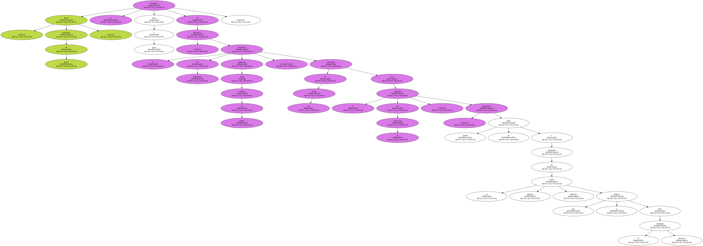
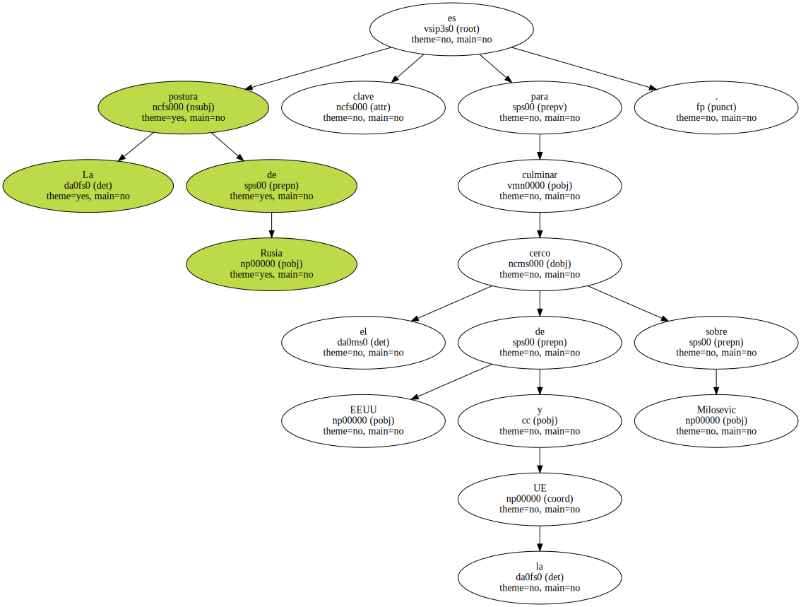
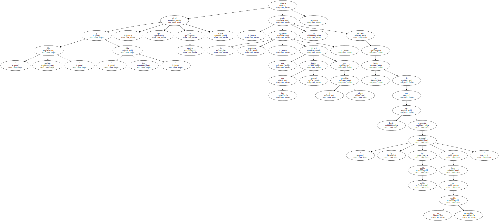

Putin , presidente de Rusia , se distancia poco a poco de Milosevic , el presidente de Yugoslavia requerido como criminal de guerra y derrotado en las urnas por el candidato de la oposición , Kostunica , quien se niega a participar en la segunda vuelta electoral que se prepara para el próximo domingo.
Putin , presidente de Rusia , se distancia poco a poco de Milosevic , el presidente de Yugoslavia requerido como criminal de guerra y derrotado en las urnas por el candidato de la oposición , Kostunica , quien se niega a participar en la segunda vuelta electoral que se prepara para el próximo domingo.
La postura de Rusia es clave para culminar el cerco de EEUU y la UE sobre Milosevic.

" Ha perdido " y " debe irse " , afirmó ayer sin tapujos Chirac , mientras la oposición yugoslava , que iniciará hoy una huelga general con el mismo propósito , se sentirá arropada por el hecho de que Rusia haya reconocido " la voluntad del pueblo serbio en favor de un cambio democrático ".
